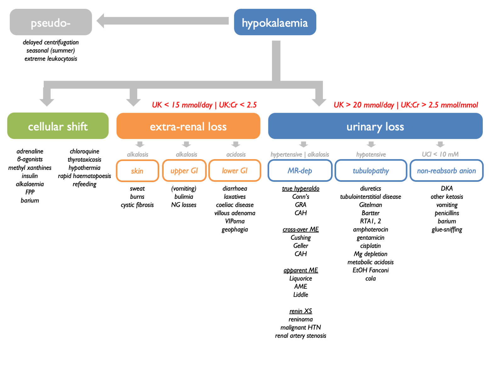

Chapter 11 Potassium
98% of body K+ resides within cells:

Extracellular potassium is regulated by parallel aldo-dependent and aldo-independent negative feedback loops, with K sensors in the adrenal cortex and DCT respectively:

Therefore plasma [K+] is sensed at two points, the DCT and the zona glomerulosa of the adrenal gland. In response to these inputs, the kidney responds by altering the balance between electroneutral (K-sparing) and electrogenic (K-wasting) Na+ reabsorption in the distal tubule:
11.1 Quantification
Renal K+ excretion may be quantified in a 24 hr urine collection (as mmols / 24 hrs) or on a spot urine sample as:
- UK
- UK:UCr
- FEK
- TTKG (transtubular potassium gradient)
Correlation between these measures is usually good. In many cases, a 24 hr urine collection will give the most definitive result.
FEK usually 5 – 15 % (can vary 2 – 150 % in response to variations in K intake).
11.1.1 Interpretation
In hypokalaemia, the following are indicative of EXTRA-renal loss:
- 24 hr UK < 20 mmoles
- UK < 20 mM
- UK:UCr < 1.5
- FEK < 2 – 3 %
- TTKG < 2
In hypokalaemia, the following are indicative of RENAL loss:
- 24 hr UK > 20 mmoles
- UK > 20 mM
- UK:UCr > 1.5
- FEK > 10 – 15 %
- TTKG >> 3
These metrics were compared in a Taiwanese cohort of patients with hypokalaemia and paralysis. TTKG (with threshold ~ 3) and UK:UCr (threshold ~ 2.5 mmol/mmol) were able to neatly discriminate between HPP (i.e. non-renal cause) and non-HPP (predominantly renal causes = Gitelman and RTA). Spot urine UK was not reliable: below 10 mM were all HPP; above 15 mM were all non-HPP but 10 – 15 mM could be either.
11.2 TTKG
The TTKG is used to estimate [K+] in the tubular fluid at the end of the CCD (i.e. the point where the tubular fluid was last isotonic to plasma). It accounts for water reabsorption in the MCD. Therefore it is a measure of renal K+ secretion – and of mineralocorticoid bioactivity in the CCD.
Assumptions & pre-requisites
The validity of the TTKG as a measure of luminal [K+] in the CCD relies on a number of assumptions:
there is no K reabsorption or secretion in the MCD (valid except in profound K deficiency / XS)
other solutes (Na / urea) are not secreted or reabsorbed in large amounts in the MCD
the osmolality of the tubular fluid at the end of the CCD is similar to POsm
These assumptions are likely to be met if the following are true:
UNa > 25 mM = 2 × maximal [Na+] required for ½-maximal K secretion in the distal rat nephron
UOsm > 300 because vasopressin is required for optimal K secretion
Interpretation
Summary (Ethier et al., 1990; Velázquez et al., 1993; Choi & Ziyadeh, 2008):
- on a normal diet, expect: TTKG = 8 – 9
- on a high K diet (or in hyperkalaemia), expect: TTKG > 10
- on a low K diet (or in hypokalaemia), expect: TTKG < 3
In hyperkalaemia:
- TTKG < 6 suggests impaired bioactivity of aldosterone in the ASDN
- TTKG > 6 suggests non-renal cause (e.g. K overload or ICF / ECF shifts)
TTKG < 6 may be due to aldosterone deficiency or impaired renal response to aldosterone (e.g. trimethoprim inhibiting ENaC). The TTKG is perhaps most useful when used to distinguish between mineralocorticoid deficiency and mineralocorticoid resistance by looking for a change in TTKG after administering exogenous mineralocorticoid for a few days (Choi & Ziyadeh, 2008).
In hypokalaemia:
- TTKG > 3 suggests renal K losses
- TTKG < 2 suggests extra-renal cause
11.3 Hypokalaemia
11.3.1 Causes of hypokalaemia
- spurious
- distribution (ECF/ICF shifts)
- K loss (renal or extra-renal)

11.3.2 Causes of K loss
| RENAL | with metabolic alkalosis | vomiting |
| with metabolic alkalosis | diuretics | |
| Gitelman | ||
| Bartter | ||
| true mineralocorticoid XS | ||
| apparent mineralocorticoid XS | ||
| RTAI | ||
| RTAII | ||
| RTAIII | ||
| DKA | ||
| Mg-depletion | ||
| non-reabsorbable anion | ||
| EXTRA-RENAL | with normal acid-base | anorexia |
| tea & toast diet | ||
| laxative abuse | ||
| diarrheoa | ||
| villous adenoma |

11.3.4 Vomiting
In vomiting, K is lost through extra-renal and renal routes. Volume contraction stimulates aldosterone; contribution for chloride depletion and bicarbonaturia. A urinary pH and UCl may be informative.
The classical differential diagnosis for unexplained hypokalaemia when surruptious vomiting / laxitive use is suspected is as follows:
| serum pH | UNa | UK | UCa | |
|---|---|---|---|---|
| laxative use | acidosis | < 10 mM | < 20 mM | |
| vomiting | alkalosis | < 10 mM | < 20 mM | < 25 mM |
| diuretic use | alkalosis | > 10 mM | > 20 mM | < 25 mM |
| Bartter | alkalosis | > 10 mM | > 20 mM | > 40 mM |
Eating disorder suggested by alternating alkalosis (vomiting) and acidosis (RTA from hypokalaemic nephropathy).
11.3.5 Non-reasbsorbable anions
Hypokalaemia can be due to renal tubular K secretion in the presence of a non-reabsorbable anion (classically IV penicillins). Look for low U.Cl and treat with IV 0.9 % NaCl. Exacerbated in volume depletion (stimulates aldosterone).
11.3.6 Hypokalaemic periodic paralysis
AD inheritance. Thought to be caused by K shifts between ICF and ECF. Associated with thyrotoxicosis in oriental males aged 20 – 50 yrs (in which case high risk of arrhythmias). In this case, treating the thyrotoxicosis will prevent paralysis (as will propranolol).
Triggers:
- sleep
- glucose / insulin / large CHO meal
- EtOH
- anxiety
Treatment:
- attacks IV K supplements
- prophylaxis K supplements & K-sparing diuretics
11.4 Hyperkalaemia
11.4.1 Causes of hyperkalaemia
- spurious
- distribution (ECF/ICF shifts)
- impaired renal K+ excretion
Renal excretion of K+ may be impaired if any of the following are limited (Hunter & Bailey, 2019):
- GFR
- tubular flow rate
- delivery of Na+ to the distal nephron
- aldosterone signalling in the distal nephron
 Hyperkalaemia is often due to an inappropriate shift from electrogenic to electroneutral Na+ reabsorption:
Hyperkalaemia is often due to an inappropriate shift from electrogenic to electroneutral Na+ reabsorption:

Therefore the causes of hyperkalaemia are:
| EXCESSIVE K LOAD | diet | high-K diet |
| drugs | IV penicillin | |
| TRANSCELLULAR SHIFTS | cell injury | rhabdomyolysis |
| beta-blockers | ||
| digoxin | ||
| anaesthetic agents | ||
| mannitol | ||
| RENAL IMPAIRMENT | renal impairment | AKI / CKD |
| DEFECTIVE ALDOSTERONE SIGNALLING | impaired renin secretion | DM |
| beta-blockers | ||
| NSAIDS | ||
| ACEi | ||
| ARBs | ||
| Addison’s | ||
| heparins | ||
| ketoconazole | ||
| PHAI | ||
| spironolactone / eplerenone | ||
| DEFECTIVE ELECTROGENIC NA TRANSPORT | ENaC blockade | PHAI |
| amiloride / triamterine | ||
| trimethoprim | ||
| pentamidine | ||
| lithium | ||
| PHAII | ||
| CNIs |
Use FECl response to thiazides as functional test for PHAII (normal response is < 3% increment).
11.4.2 Causes of spurious hyper- and hypokalaemia
PseudohyperK from K-EDTA contamination.
PseudohyperK due to prolonged delay prior to centrifugation (blood cells leak K in cold weather).
PseudohypoK due to prolonged delay prior to centrifugation (blood cells take up K via Na-K-ATPase in the warm; “seasonal pseudohypoK” in summer).
PseudohyperK due to leucocytosis (WBC > 70) – K released from cells during clot formation (test by measuring serum and plasma K simultaneously).
Familial hyperK due to abnormalities in RBC membrane permeability.